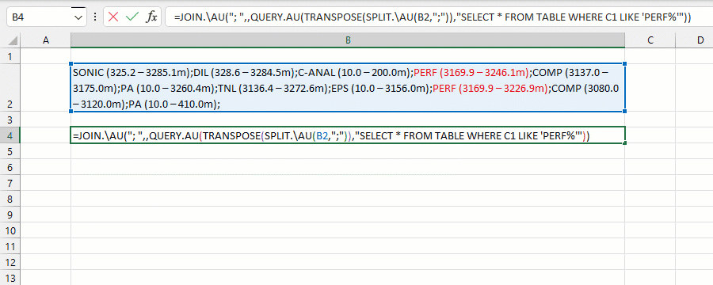
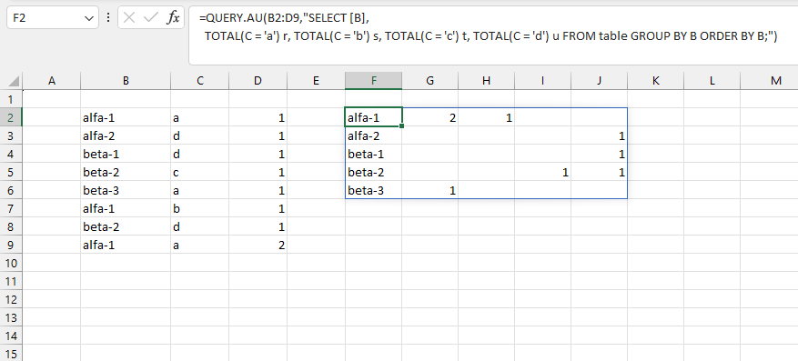

VD1: tìm tất cả các chuỗi con bắt đầu với PERF (phần tô màu).
VD2: Triển khai bảng thống kê ở dạng PIVOT (truy vấn không hỗ trợ keyword PIVOT).
//
FUNCTION NAME | FUNCTION SYNTAX |
-----------------------|------------------------------------------------------|
DATETIME FUNCTIONS | DATETIME FUNCTIONS |
DATEADD | =DATE.ADD(interval, num, dates) |
DATEPART | =DATEPART(interval, dates) |
DATEDIFF | =DATEDIFF(interval, date1, date2) |
TIMESTAMP | =TIMESTAMP(datetimes) |
HOUR | =HOUR(datetimes) |
MINUTE | =MINUTE(datetimes) |
SECOND | =SECOND(datetimes) |
DAY | =DAY(datetimes) |
MONTH | =MONTH(datetimes) |
YEAR | =YEAR(datetimes) |
-----------------------|------------------------------------------------------|
LOGIC FUNCTIONS | LOGIC FUNCTIONS |
ISINT | =ISINT(values) |
ISNUMBER | =ISNUMBER(values) |
ISDATE | =ISDATE(values) |
ISUPPER | =ISUPPER(values) |
ISLOWER | =ISLOWER(values) |
ISALPHA | =ISALPHA(values) |
ISDIGIT | =ISDIGIT(values) |
ISALPHANUM | =ISALPHANUM(values) |
ISSYMBOL | =ISSYMBOL(values) |
ISLIKE | =ISLIKE(values) |
MATCHES | =OPERATOR |
ISBLANK | =ISBLANK(values) |
ISZERO | =ISZERO(values) |
ISNULL | =ISNULL(values) |
GREATER | =GREATER(values) |
SMALLER | =SMALLER(values) |
BETWEEN | =BETWEEN(values) |
EQUAL | =EQUAL(values) |
ISODD | =ISODD(values) |
ISEVEN | =ISEVEN(values) |
STARTWITH | =STARTWITH(values) |
ENDWITH | =ENDWITH(values) |
CONTAIN | =CONTAIN(values) |
-----------------------|------------------------------------------------------|
CONVERT FUNCTIONS | CONVERT FUNCTIONS |
TO.INT | =TO.INT(values) |
TO.NUM | =TO.NUM(values) |
TO.TEXT | =TO.TEXT(values) |
TO.ENG | =TO.ENG(values) |
ROUNDUP | =ROUNDUP(values) |
ROUNDDOWN | =ROUNDDOWN(values, [num]) |
ROUNDNEAREST | =ROUNDNEAREST(values, [num]) |
UPPER | =UPPER(values) |
LOWER | =LOWER(values) |
PROPER | =PROPER(values) |
SENTENCE | =SENTENCE(values) |
-----------------------|------------------------------------------------------|
MATH FUNCTIONS | MATH FUNCTIONS |
AVERAGE | =AVERAGE(column) |
PLUS | =PLUS(values,num) |
MINUS | =MINUS(values,num) |
PRODUCT | =PRODUCT(values,num) |
DIVIDE | =DIVIDE(values,num) |
RAND | =RAND() |
SUMIF | =SUMIF(values, criteria) |
MAXIF | =MAXIF(values, criteria) |
MINIF | =MINIF(values, criteria) |
AVERAGEIF | =AVERAGEIF(values, criteria) |
MEDIAN | =MEDIAN(values) |
SUM.A | =SUM.A(values) |
MAX.A | =MAX.A(values) |
MIN.A | =MIN.A(values) |
AVERAGE.A | =AVERAGE.A(values) |
SQRT.A | =SQRT.A(values) |
CEILING.A | =CEILING.A(values) |
TRUNC.A | =TRUNC.A(values) |
EXP.A | =EXP.A(values) |
FLOOR.A | =FLOOR.A(values) |
MOD.A | =MOD.A(values,num) |
POW.A | =POW.A(values,num) |
POWER.A | =POWER.A(values,num) |
SIGN.A | =SIGN.A(values) |
ABS.A | =ABS.A(values) |
-----------------------|------------------------------------------------------|
ARRAY FUNCTIONS | ARRAY FUNCTIONS |
INDEX | =INDEX(values, num) |
MATCH | =MATCH(lookup_value,values) |
FIRST | =FIRST(values) |
LAST | =LAST(values) |
TAKE | =TAKE(values, num) |
DROP | =TAKE(values, num) |
HSTACK | =HSTACK(values) |
SORT | =SORT(values, order) |
SEQUENCE | =SEQUENCE(num1, num2) |
NO() | =NO() |
FILTER | =FILTER(values, criteria) |
UNIQUE | =UNIQUE(values) |
NONBLANK | =NONBLANK(values) |
NONZERO | =NONZERO(values) |
CHARS | =CHARS(values) |
-----------------------|------------------------------------------------------|
STRING FUNCTIONS | STRING FUNCTIONS |
FIND | =FIND(with_text, find_text) |
FINDOF | =FINDOF(with_text, find_text) |
FINDLAST | =FINDLAST(with_text, find_text) |
FINDLASTOF | =FINDLASTOF(with_text, find_text) |
FIND.AT | =FIND.AT(with_text, find_text, num) |
LEFT | =LEFT(values, num) |
MID | =MID(values, num) |
MID.W | =MID.W(values, text1, text2) |
MID.AT | =MID.AT(values, text1, text2, num) |
RIGHT | =RIGHT(values, num) |
CONCAT | =CONCAT(values) |
JOIN | =JOIN(delimiter, ignore_empty, values) |
TEXTBEFORE | =TEXTBEFORE(values, delimiter, [instance_num]) |
TEXTAFTER | =TEXTAFTER(values, delimiter, [instance_num]) |
SPLIT.PART | =SPLIT.PART(values, delimiter, [instance_num]) |
SPLIT | =SPLIT(values, delimiter, [ignore_empty]) |
| =SPLIT(values, delimiter, [by_each], [ignore_empty]) |
FORMAT | =FORMAT(values, format_code) |
REPT | =REPT(values, num) |
REVERSE | =REVERSE(value[s]) |
ERASE | =ERASE(values, [char_type], [include_space]) |
TEXT.DIGIT | =TEXT.DIGIT(values, [include_space]) |
TEXT.INT | =TEXT.INT(values, [num]) |
TEXT.NUM | =TEXT.NUM(values, [num]) |
TEXT.ALPHA | =TEXT.ALPHA(values, [include_space]) |
TEXT.ALPHANUM | =TEXT.ALPHANUM(values, [include_space]) |
TEXT.UPPER | =TEXT.UPPER(values, [include_space]) |
TEXT.LOWER | =TEXT.LOWER(values, [include_space]) |
REG.SPLIT | =REG.SPLIT(values, pattern, [num]) |
REG.EXTRACT | =REG.EXTRACT(values, pattern, [num]) |
REG.REPLACE | =REG.REPLACE(values, pattern, replace_text) |
REG.MATCH | =REG.MATCH(values, pattern) |
REG.COUNT | =REG.COUNT(values, pattern, [is_group]) |
-----------------------|------------------------------------------------------|
STATISTICAL FUNCTIONS | STATISTICAL FUNCTIONS |
COUNTA | =COUNTA(values) |
COUNTBLANK | =COUNTBLANK(values) |
COUNT.A | =COUNT.A(values) |
COUNTZERO | =COUNTZERO(values) |
COUNTNULL | =COUNTNULL(values) |
COUNTIF | =COUNTIF(values) |
COUNT.W | =COUNT.W(values) |
COLUMNS | =COLUMNS(values) |
Related function
XQUERY Truy vấn dữ liệu giữa nhiều bảng dựa vào câu lệnh SQL.
PIVOT Tương tự chức năng PIVOT trong Power Query.
Return to Home